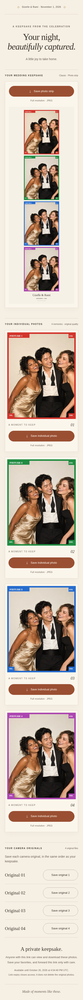
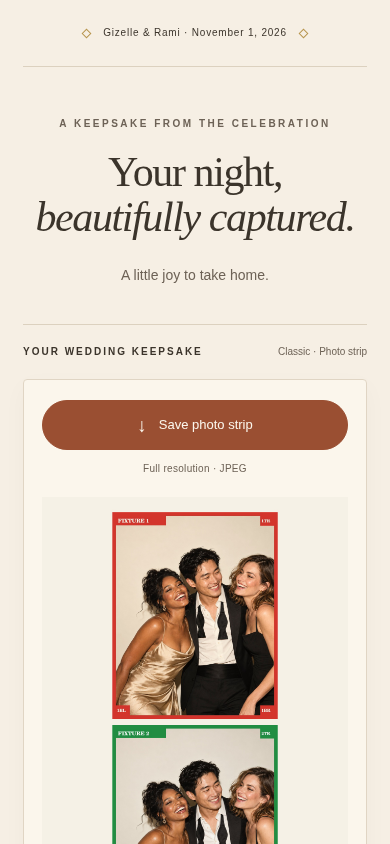
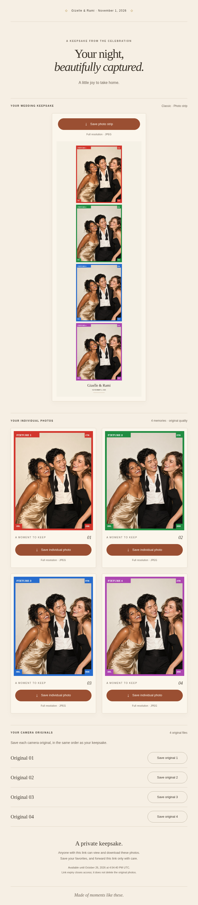
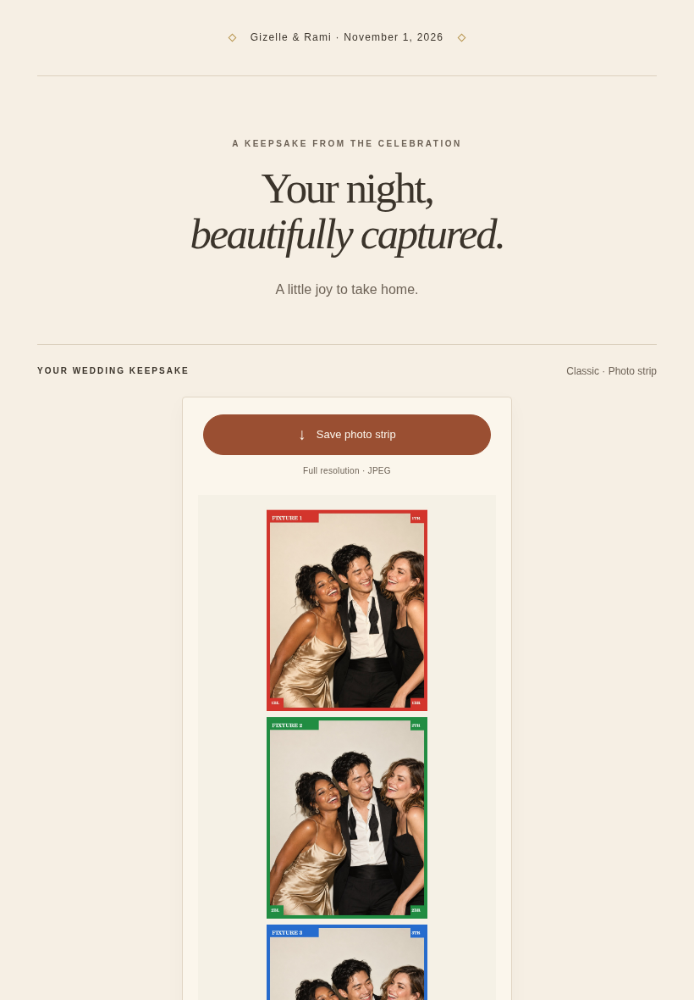
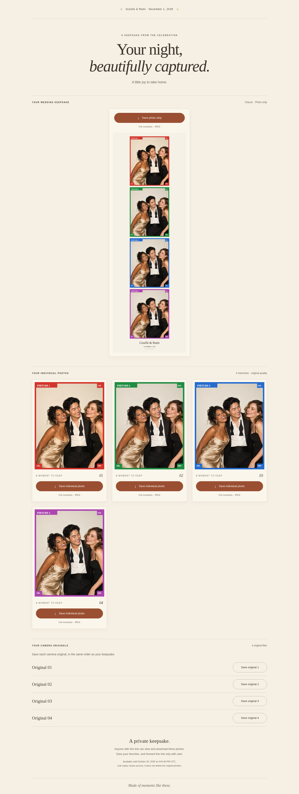
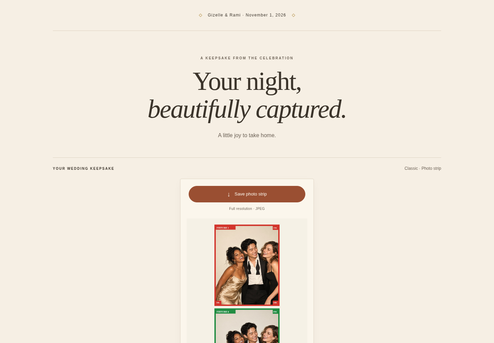
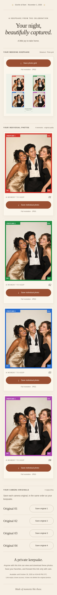
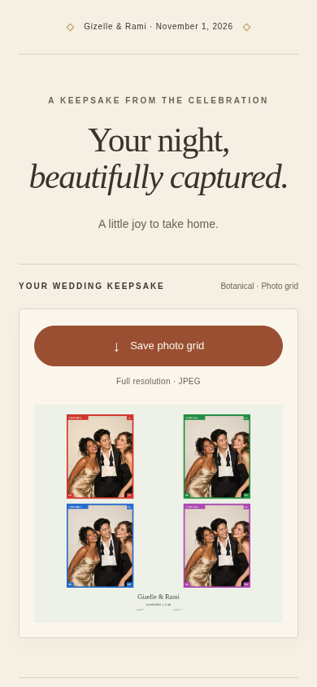
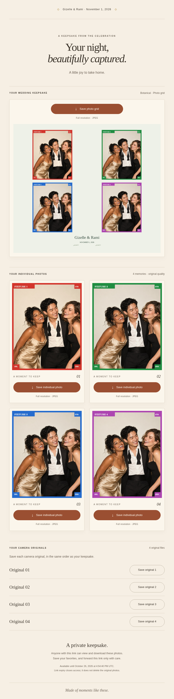
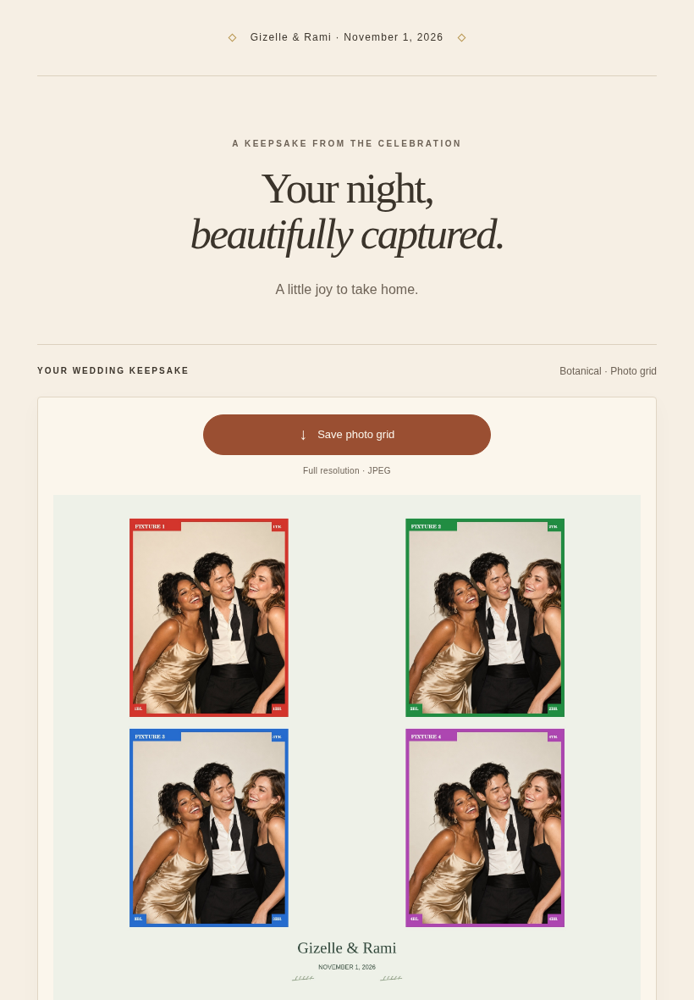
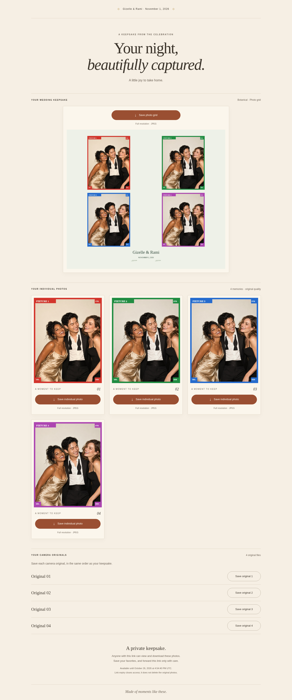
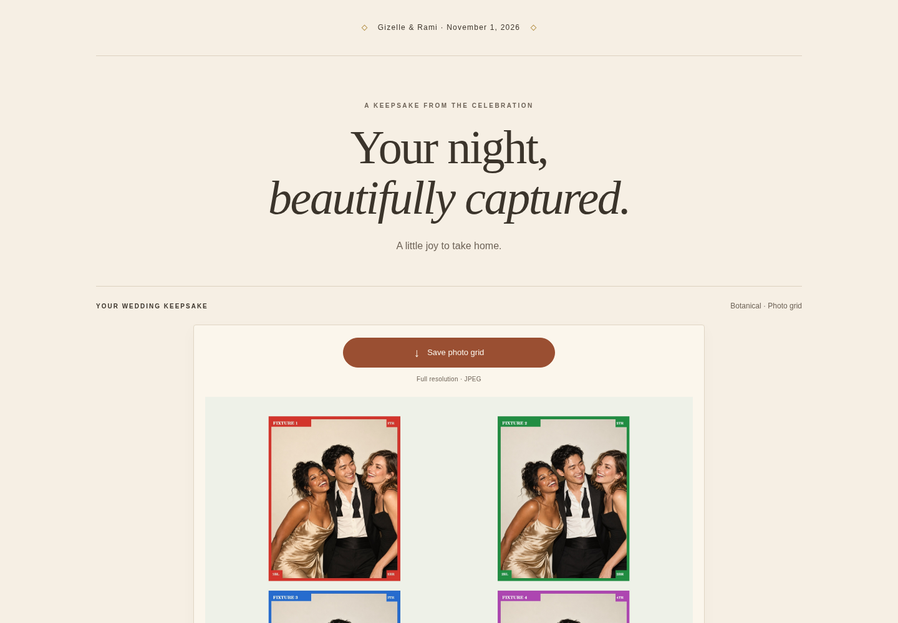
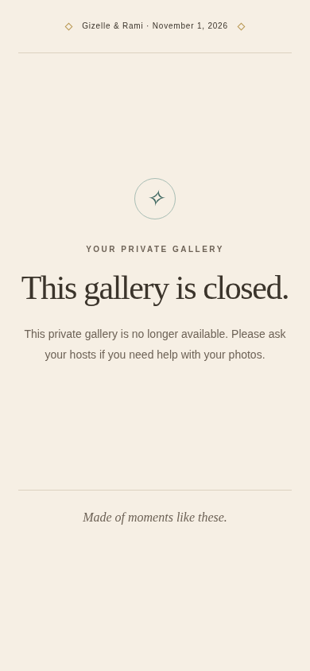
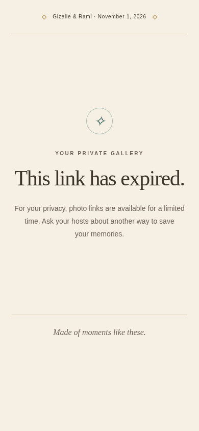
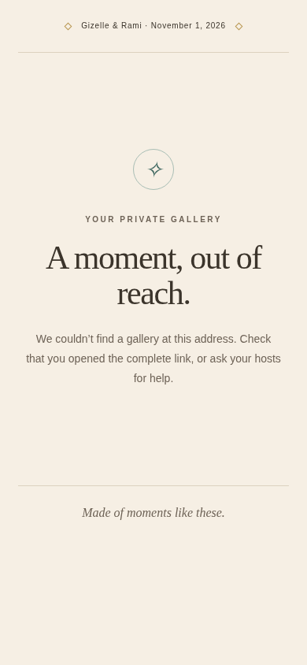
Actual local Worker + Chromium · synthetic fixtures only · unpublished.
Source SHA256: 377618a384ffecc2452518d85d7fbff4b6a00c0a4eaeb27721735426fa245dfa
Checks and download hashes · Scope and notes
Visual inspection and local diagnostic cleanup · SHA256 manifest














